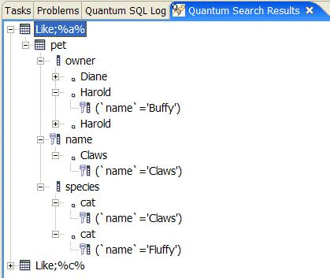

Sometimes you know there is someone called Josephine in one of your database tables, but you may not know which one. Search will come to rescue.
The way search works is as follows:
You have to select either text, number or date search. Quantum will check the metadata of the columns searched to see whether the column matches your search type. This way Quantum will not look for numbers in text columns (unless you enter the number in the text search field, of course).
Check the Quantum log if the function does not work as expected.
This is where you enter a search term. Quantum will match the whole column against this entry. Depending on the Match case setting the text will have to match capitalization or not.
Use this check box to decide on the case of the search. Note that even when your database matches string queries without case, Quantum will still compare the query results for case. Suppose that 'quantum' is your case sensitive search term. If your database matches Quantum to quantum, the search facility will remove this result from the list.
This is where you can enter advanced searches based on regular expressions. You have to include your database specific 'wild cards'. The search honours the Match case setting. So %x% will look for columns containing a lower case x, if the Match case checkbox is checked.
Enter a number to look for here. Quantum will look in numeric fields for this number. Might not work for floats...
Searching for dates is difficult to support across databases. Quantum uses a three step process. First it compares your entry to a timestamp, using the escape function {ts yyyy-mm-dd hh:mm:ss[.fff]}. If this fails a date escape is tried: {d yyyy-mm-dd} and if that fails a time is assumed: {t hh:mm:ss}. You can enter an exact time to look for by leaving the end date field blank. If both are entered the resulting query will check >= begin date and <= end date.
Quantum displays the results in it's own view, because the standard search result view cannot be used, because the results are not file based. The results are presented in a tree hierarchy. Each search starts its own branch.
Double clicking an item in the results tree will get the following done:
| Item | Where | Description |
|---|---|---|
| Table | Table view | SELECT * FROM Table |
| Column | Table view | SELECT Column FROM Table |
| Primary Key | Table view | SELECT * FROM Table WHERE (primary key = Primary Key) |
| Procedure | SQL Editor | Opens it in editor and highlights the search term |